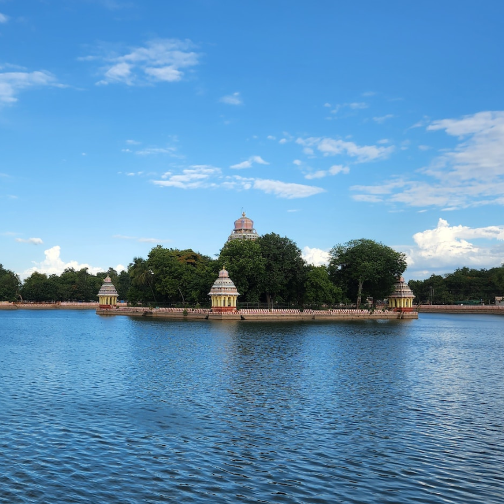

Destinations
Tamil Nadu is a state located in the southern part of India, and it is divided into several distinct regions, each with its own unique features. The regions of Tamil Nadu are classified based on their geography, climate, culture, and history.The coastal region is known for its beaches and seafood cuisine, while the hilly region is characterized by its misty hills and cool climate. The central region is home to ancient temples and traditional handicrafts, and the southern region is known for its beaches and cultural landmarks.
MaduraiMadurai, the ancient city that never sleeps, is a treasure trove of culture and heritage. With its stunning Meenakshi Amman Temple, bustling bazaars, and mouth-watering cuisine, Madurai offers a truly immersive experience that will leave you spellbound. |
 |

|
ThanjavurThe Tanjore region is a land of timeless beauty and artistic splendor. From the stunning Brihadeeswara Temple, a masterpiece of South Indian temple architecture, to the intricate bronze statues and paintings that adorn the region's museums and galleries, Tanjore is a feast for the eyes and the soul. |